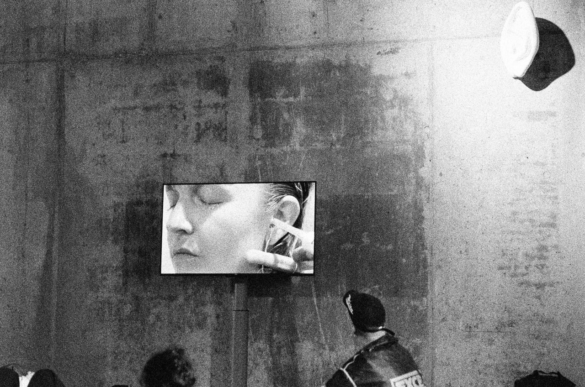
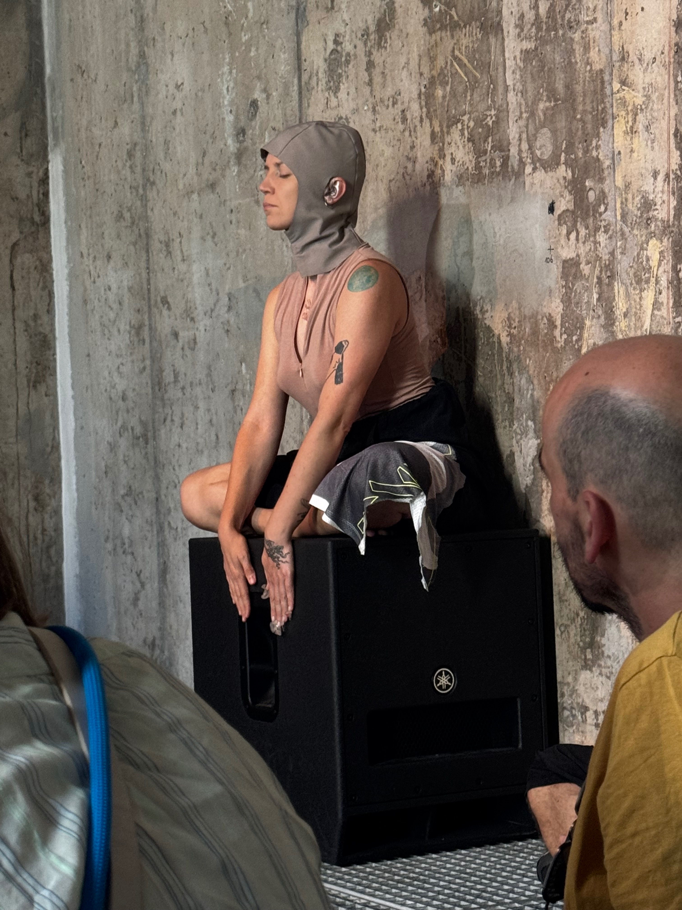
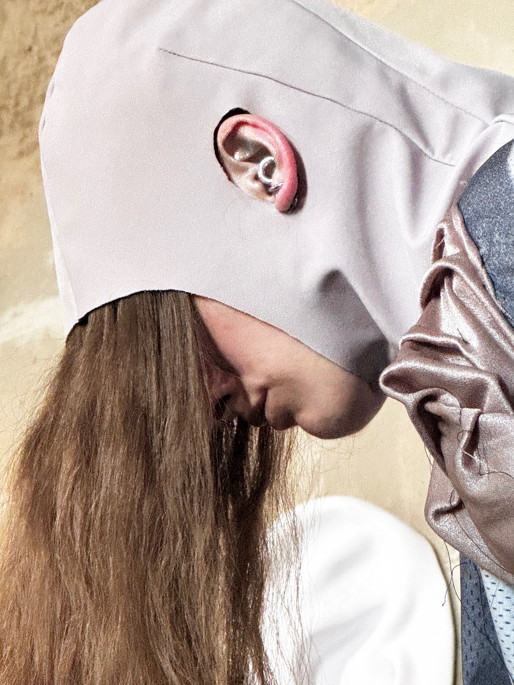
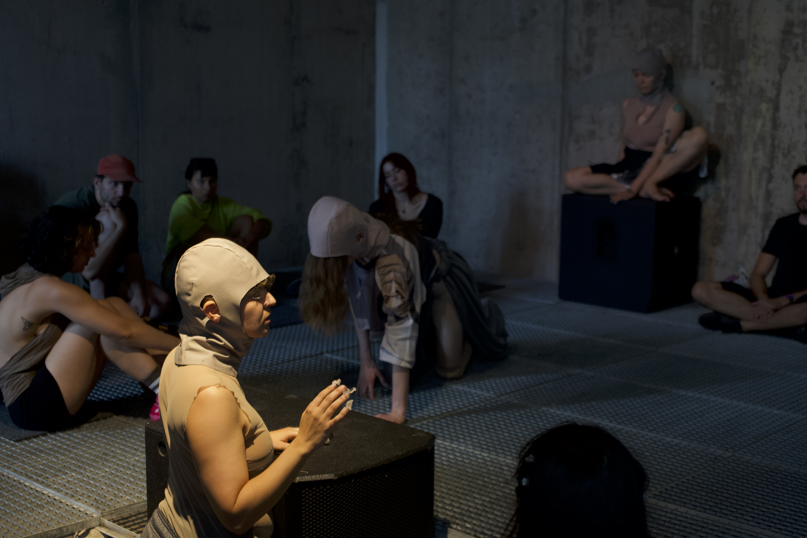
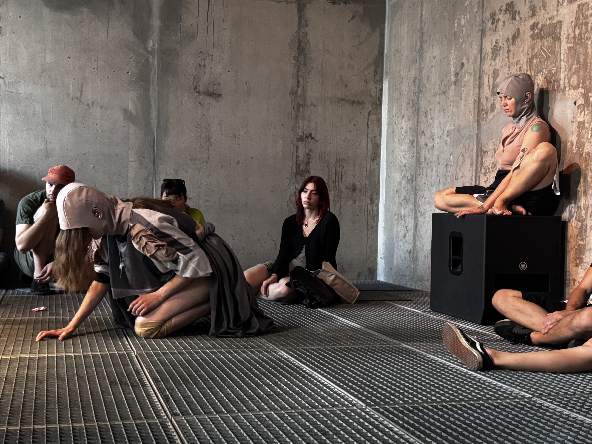
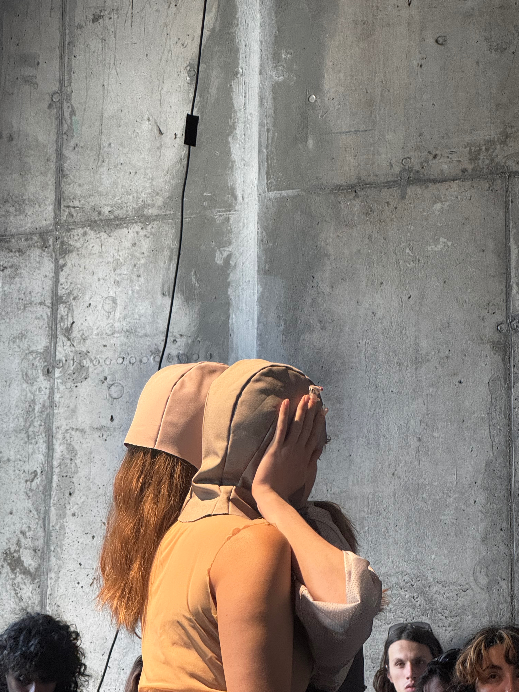
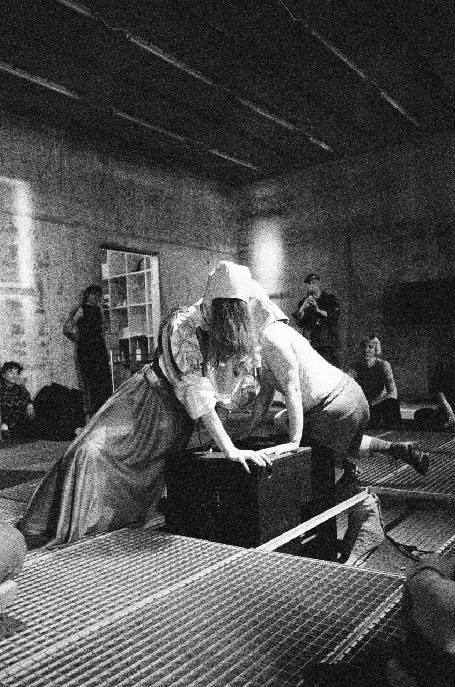

pati masłowska
AURICLE | institute for sonically transitory states
Space Between, Nurnberg 2025
The auricle, or pinna, is the external structure of the ear that collects and channels sound. In the heart, the auricle is a small, ear-like appendage of the atrium—the “Herzohr.” As a choreographic score for sonic agency, it digs into the bottom of the ear to awaken layers of the preserved and repressed. Sourcing from the structure of a clinical hearing test, "auricle" distorts diagnostic protocol into a space of affective and acoustic uncertainty. If hearing happens involuntarily, how do we choose what we listen to?
by pati masłowska
with: Mars Löffler, Lina Hartmann
sound design: Alexandru Șalariu
video: ella hebendanz , Aiden Doriguzzi Breatta
part of the master program Live Art Forms, AdBK Nurnberg






